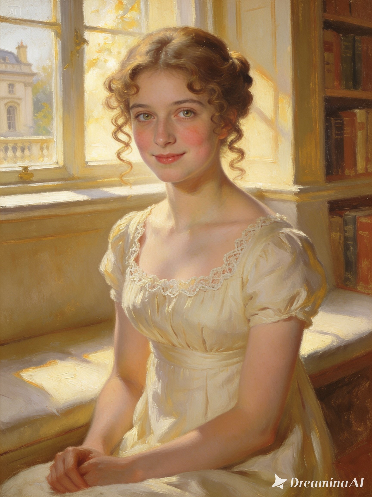

[Escribe aquí tu análisis detallado sobre la relación entre Fanny y Edmund, sus dilemas morales, el desarrollo del afecto y cómo evoluciona a lo largo de la novela...]

Sinopsis
Mansfield Park es el majestuoso hogar de la distinguida familia Bertram, una mansión llena de risas, conflictos y amores complicados impulsados por personalidades muy variadas. A este entorno llega Fanny Price, una joven tímida de familia humilde enviada a vivir con sus tíos ricos. Entre los desprecios de casi toda la familia, Fanny encuentra refugio únicamente en su primo Edmund, mientras aprende a navegar la moralidad y los escándalos de la alta sociedad en un viaje transformador que la llevará del rechazo al amor.
Reseña / Opinión Personal
Quiero comenzar con una confesión: esta lectura la hice por puro placer, lo menciono porque al estudiar literatura tengo que leer por educación... este no fue el caso (y en medio de un proceso de ruptura amorosa), por lo que mi visión del libro está profundamente filtrada por esa experiencia.
Tengo entendido que Mansfield Park es una de las obras con menor reconocimiento de Jane Austen y, sinceramente, no entiendo por qué. Sus personajes son espectaculares ya que no son figuras bidimensionales que solo sirven para rellenar la trama, sino seres tridimensionales a quienes llegas a amar, comprender o incluso detestar... aunque a decir verdad, el talento de Austen no te permite odiarlos del todo; entiendes sus fallas y sus contextos, lo cual no significa que los perdones (te hablo a ti Henry Crawford).
El dominio que tiene Austen sobre la atmósfera narrativa es una verdadera locura. La construcción de los espacios es tan precisa que escoge las palabras exactas para evocar la imaginación y hacerte sentir allí. Por ejemplo, cuando Fanny visita a su familia biológica, el contraste es brutal: la descripción del ruido, la estrechez y la suciedad te sumerge por completo en esa realidad sofocante, logrando un equilibrio perfecto con la elegancia contenida de Mansfield Park. Fue una experiencia inmersiva, amena y muy envolvente.
Más allá de la ambientación, me pareció fascinante el contraste entre la riqueza y la pobreza para exponer el clasismo de la época, incluso dentro de las dinámicas de la propia familia. La forma en que Austen retrata la rectitud, la apatía y la vanidad a través de las situaciones que viven los personajes resuena muchísimo. Puede que analice todo esto filtrado desde mi visión contemporánea (no pretendo hacer un análisis sociológico e histórico estricto), pero la crítica a la escala de valores humanos sigue sintiéndose dolorosamente vigente.
🚨 Advertencia de Spoiler: Haz clic en el recuadro para revelar el comentario sobre el final.
Dicen que los libros siempre llegan a nuestra vida en el momento adecuado, cuando estamos listos para recibirlos y aprender de ellos. Mansfield Park se va a quedar en mi corazón para siempre porque, justo en medio de mi proceso personal, me recordó algo fundamental: no tengo por qué conformarme con menos y, al igual que Fanny, mi valor me lo doy yo misma.
¿Te animas a leerlo?
Dinámica Principal: El Vínculo en Mansfield

Fanny Price
La protagonista virtuosa
[Tu reseña/descripción sobre Fanny Price...]

Edmund Bertram
El primo moralista
[Tu reseña/descripción sobre Edmund Bertram...]
Galería de Personajes

Henry Crawford
[Reseña/opinión sobre Henry...]

Mary Crawford
[Reseña/opinión sobre Mary...]

Sir Thomas Bertram
[Reseña/opinión sobre Sir Thomas...]

Lady Bertram
[Reseña/opinión sobre Lady Bertram...]

Mrs. Norris
[Reseña/opinión sobre Mrs. Norris...]

Tom Bertram
[Reseña/opinión sobre Tom...]

Maria Bertram
[Reseña/opinión sobre Maria...]
Frases Favoritas
«Tengo que aprender a soportar que se me considere la persona más feliz del mundo, cuando en realidad soy la más desdichada.» — Jane Austen, Mansfield Park